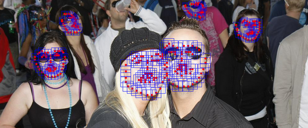

This project provides a C++ implementation of human face and body detection from photos. Below is a brief manual, detailed documentation is generated using doxygen.
Tip Although all the data structurs and functions are arranged in C style, you can use the Files tab to have an "OO" kinda view.

Get started
Checkout latest code
svn checkout http://eharmony-photofeature.googlecode.com/svn/trunk/ eharmony-photofeature-read-only
Dependencies
The code depends on OpenCV to load/dispaly image, I'm looking into light-weight alternatives. A cblas library should also be installed, e.g.
Ubuntu/Debian
sudo apt-get install libblas-dev
Fedora
sudo yum install atlas-sse3-devel.x86_64
Usage example
-
-
-
-
-
#include <vector>
-
-
int main(int argc, char** argv){
-
//load face model & body model
-
facemodel_t* facemodel = facemodel_readFromFile("face_p146.xml");
-
posemodel_t* posemodel = posemodel_readFromFile("pose_BUFFY.xml");
-
-
//load a jpeg image
-
image_t* img = image_readJPG(argv[1]);
-
-
//detect faces and show results
-
std::vector<bbox_t> faces = facemodel_detect(facemodel,posemodel,img);
-
image_showDetection(img, faces, "Face Detection Results");
-
-
//destruct image and models
-
image_delete(img);
-
facemodel_delete(facemodel);
-
posemodel_delete(posemodel);
-
-
return 0;
-
}
Image data structure and operation
A structure type image_t is defined to present images. Some usesful operations are also provided, e.g. to load a jpeg image from file, use
image_ptr image_readJPG (const char *filename)
To delete an image, use
void image_delete (image_ptr img)
Face detection
Face detection is based on algorithm described in [1]. Pre-trained models are provided in XML format.
To load a face model, use
facemodel_t * facemodel_readFromFile (const char *filepath)
To detect faces, use
vector< bbox_t > facemodel_detect (const facemodel_t *model, const image_ptr img)
A body detection model can also be combined to help improve detection performace
vector< bbox_t > facemodel_detect (const facemodel_t *facemodel, const posemodel_t *posemodel, const image_ptr img)
Results can be visualized using
void image_showDetection (const image_ptr img, const vector< bbox_t > boxes, const std::string &winname)
or
void image_showFaces (const image_ptr img, const vector< bbox_t > boxes, const std::string &winname)
Finally, a face model can be deleted using
void facemodel_delete (facemodel_t *model)
Body/pose detection
Human body detection is based on algorithm described in [2]. Pre-trained models are provided in XML format.
To load a pose model, use
posemodel_t* posemodel_readFromFile(const char* filepath)
To detect poses, use
vector<bbox_t> posemodel_detect(const posemodel_t* model, const image_ptr img)
Results can be visualized using
void image_showDetection (const image_ptr img, const vector< bbox_t > boxes, const std::string &winname)
Finally, the model can be deleted using
void posemodel_delete(posemodel_t* model)
References
[1] X. Zhu, D. Ramanan. "Face detection, pose estimation and landmark localization in the wild" Computer Vision and Pattern Recognition (CVPR) Providence, Rhode Island, June 2012.
[2] Y. Yang, D. Ramanan. "Articulated Pose Estimation using Flexible Mixtures of Parts" Computer Vision and Pattern Recognition (CVPR) Colorado Springs, Colorado, June 2011.
 1.7.6.1
1.7.6.1